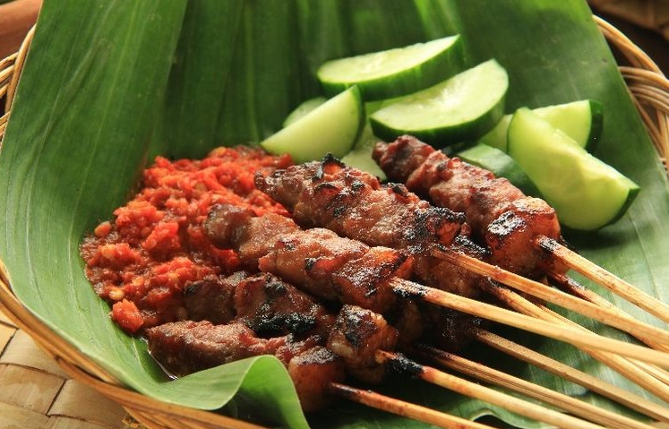

CHILLI CRAB in Singapore
.jpg)
Stir-fried crab in a tomato based, sweet, savoury and slightly hot chilli sauce. Break into its claws with crab crackers and suck at the flesh. The popular crab choice in Singapore is the mud crab but expect all sorts of shapes and sizes. While having lost its lustre of late the chilli Crab will always be a must-eat when in Singapore.
KHANTOKE DINNER in Thailand
.jpg)
A traditional Northern Thai feast showcasing many of the region’s Lanna food favourites. Bites include chilli dips, spicy sausage, Northern style curries and the staple rice. “Khantoke” refers to the haunch height, round tables in which diners feast around and dinners generally come with traditional dance, performances and local liquor.
CANDIED HAWS in China
.jpg)
Like mini candy apples with a sharp sour bite. Candied haws known locally as Bing Tanghulu are a popular street food snack made from local Chinese Hawthorns skewered, dipped in sugar syrup and left to harden. While haws are the most common sweet, there are variations with deseeded and stuffed haws or varying candied fruits.
KIMCHI in Korea
.jpg)
Accompanying almost every Korean meal these spicy, fermented vegetables are like the ketchup of Korea. While the most common Kimchi is of pickled napa cabbage (baechu kimchi) there is in fact seemingly endless variations of vegetables and seasonings. To make a meal of it try Kimchi fried rice (Kimchi Bokumbap).
SATAY (SATE) in Indonesia
Quintessential barbecue food with tender meat pieces, marinated, skewered and grilled over flaming hot charcoals. Satay comes served with a fiery, hot peanut sauce and while replicated elsewhere in Asia regional interpretations can be less spicy and more sweet. Satay is no doubt found best at its origins in Java Indonesia.
ROTI PRATA in Singapore
.jpg)
Better known for origins in India this humble pan-fried flatbread followed old colonial trade routes to Singapore, my new favourite city to share this simple food staple. Roti Prata is found best at Indian Muslim shop house restaurants in Singapore, try Little India or Geylang. Best served with curry sides and Tiger Beer.
AIS KACANG in Malaysia
.jpg)
Shaved ice is common with Asian desserts but for me it is best found in Malaysia with AIS Kacang, a mix of shaved ice and variations of fruit, beans, icecreams and syrups. Ingredients do vary but the traditional mix comes with red beans, sweet corn, grass jelly and cubes of agar jelly. Also popular in Singapore and Brunei.